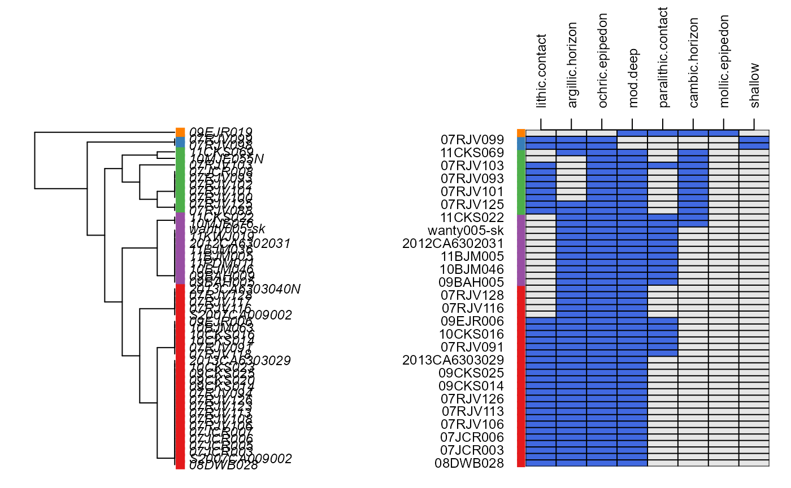

diagnosticPropertyPlot.RdGenerate a graphical description of the presence/absence of soil diagnostic properties.
diagnosticPropertyPlot(f, v, k, grid.label='pedon_id', dend.label='pedon_id', sort.vars=TRUE) diagnosticPropertyPlot2(f, v, k, grid.label='pedon_id', sort.vars=TRUE)
| f | a |
|---|---|
| v | a character vector of site-level attribute names that are boolean (e.g. TRUE/FALSE) data |
| k | an integer, number of groups to highlight |
| grid.label | the name of a site-level attribute (usually unique) annotating the y-axis of the grid |
| dend.label | the name of a site-level attribute (usually unique) annotating dendrogram terminal leaves |
| sort.vars | sort variables according to natural clustering (TRUE), or use supplied ordering in |
This function attempts to display several pieces of information within a single figure. First, soil profiles are sorted according to the presence/absence of diagnostic features named in v. Second, these diagnostic features are sorted according to their distribution among soil profiles. Third, a binary grid is established with row-ordering of profiles based on step 1 and column-ordering based on step 2. Blue cells represent the presence of a diagnostic feature. Soils with similar diagnostic features should 'clump' together. See examples below.
a list is silently returned by this function, containing:
rda data.frame containing IDs and grouping code
profile.ordera vector containing the order of soil profiles (row-order in figure), according to diagnostic property values
var.ordera vector containing the order of variables (column-order in figure), according to their distribution among profiles
D.E. Beaudette and J.M. Skovlin
# \donttest{ if(require(aqp) & require(soilDB) & require(latticeExtra) ) { # sample data, an SPC data(gopheridge, package='soilDB') # get depth class sdc <- getSoilDepthClass(gopheridge) site(gopheridge) <- sdc # diagnostic properties to consider, no need to convert to factors v <- c('lithic.contact', 'paralithic.contact', 'argillic.horizon', 'cambic.horizon', 'ochric.epipedon', 'mollic.epipedon', 'very.shallow', 'shallow', 'mod.deep', 'deep', 'very.deep') # base graphics x <- diagnosticPropertyPlot(gopheridge, v, k=5) # lattice graphics x <- diagnosticPropertyPlot2(gopheridge, v, k=3) # check output str(x) }#> List of 3 #> $ rd :'data.frame': 52 obs. of 3 variables: #> ..$ peiid : chr [1:52] "1137354" "1147151" "1147190" "242808" ... #> ..$ pedon_id: chr [1:52] "08DWB028" "07RJV098" "07RJV099" "S2007CA009002" ... #> ..$ g : int [1:52] 1 2 2 1 1 1 1 1 1 1 ... #> $ profile.order: int [1:52] 1 4 6 7 8 9 15 16 17 21 ... #> $ var.order : int [1:8] 1 3 5 8 2 4 6 7# }